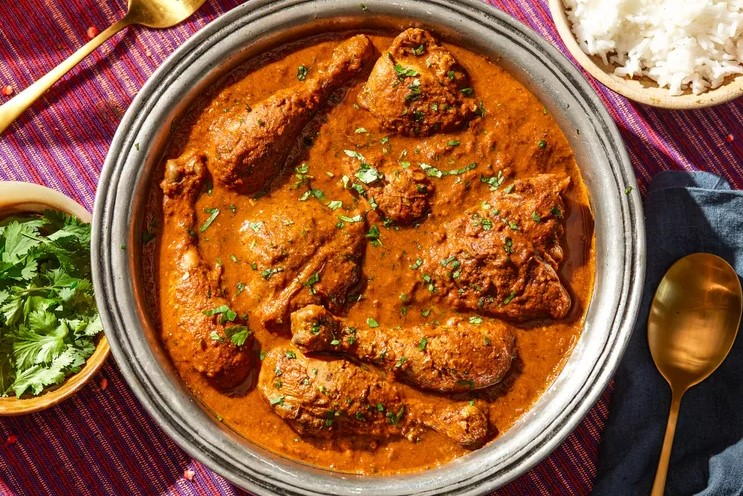

Chicken Curry

Ingredients:
- 800g chicken
- 180g curry paste
- 3 large potato
- 3 large onion
- 3 stalks curry leaves
Instructions:
- First, saute curry paste in hot oil until fragrant. Add in chicken. Continue to saute until chicken releases oil.
- Second, add in water, tamarind paste, curry leaves, potato, onion, sugar and salt. Let chicken simmer in slow fire until potatoes becomes soft and chicken is cooked thoroughly.
- Lastly, add in coconut milk and cook until oil starts to separate. Remove and serve.